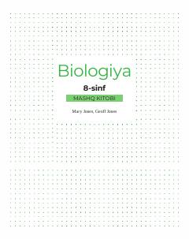

B88-sinf o'quvchilari uchun biologiya fanidan amaliy ko'nikmalarni rivojlantiruvchi mashq kitobi.
Mazkur nashr 8-sinf o'quvchilari uchun mo'ljallangan biologiya fanidan mashq kitobi bo'lib, o'quvchilarning nazariy bilimlarini amaliy ko'nikmalar bilan mustahkamlashga xizmat qiladi. Kitobda tirik organizmlarning xususiyatlari, hujayra tuzilishi, moddalar transporti, o'simlik va hayvonlarning oziqlanishi hamda qon aylanish sistemasiga oid qiziqarli topshiriqlar berilgan. Shuningdek, u o'quvchilarning tadqiqotchilik va mustaqil ta'lim olish ko'nikmalarini rivojlantirishga qaratilgan.